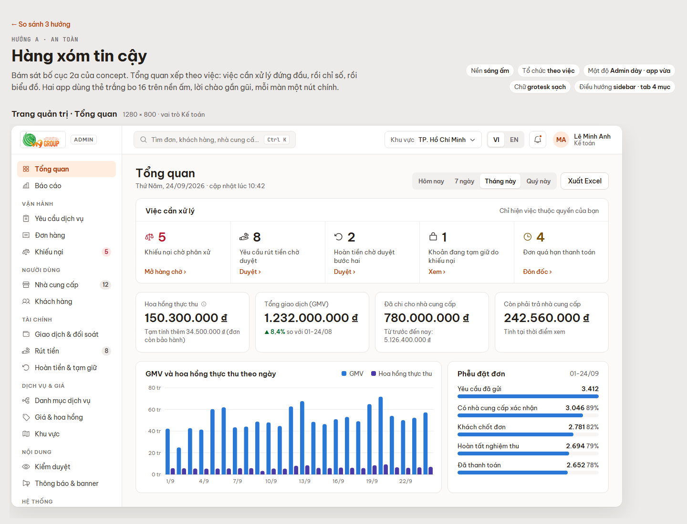
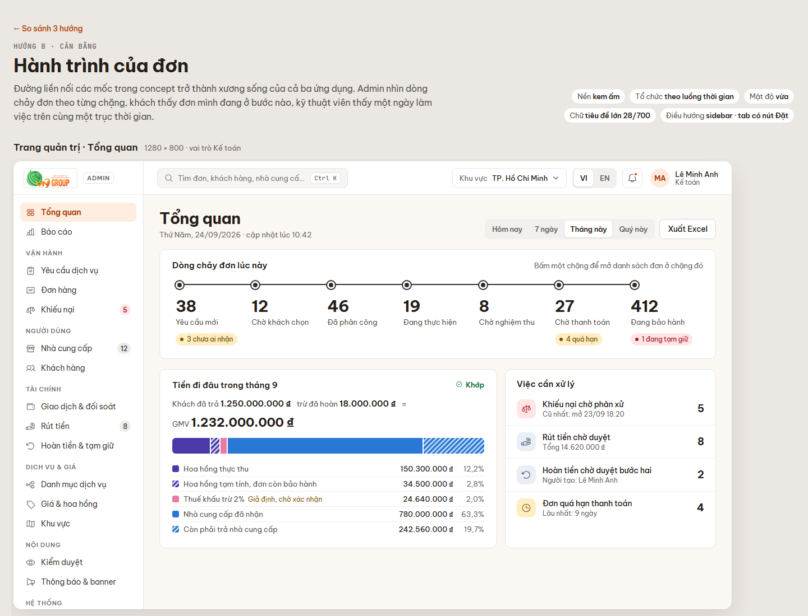
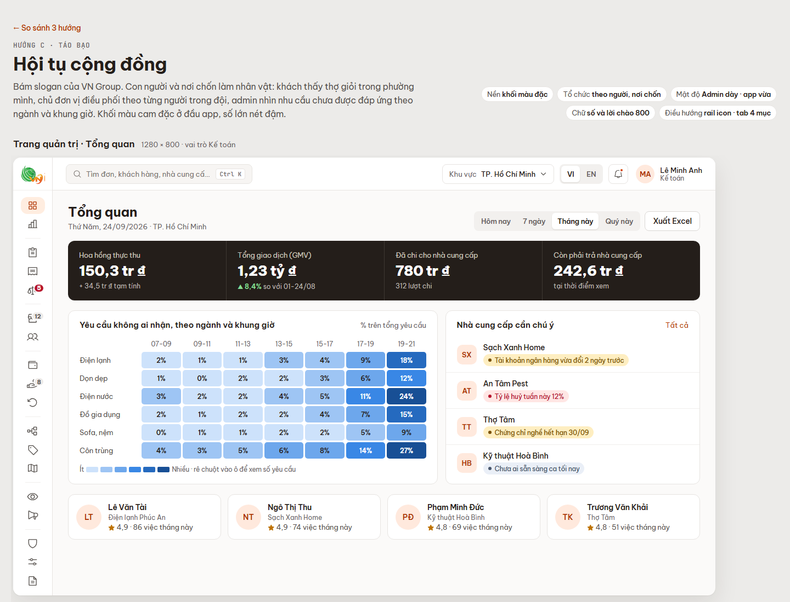

Ba hướng thiết kế
Cả ba đều trong phong cách "Thân thiện, cộng đồng" bạn chọn ở Cổng 2, dùng chung màu, chữ và bo góc của concept. Chúng khác nhau ở cách tổ chức màn chính, nền, cách điều hướng và tính cách chữ. Mỗi hướng gồm màn Tổng quan của Trang quản trị và một màn chính của từng app.
Đã khoá: Be Vietnam Pro · JetBrains MonoCam chỉ cho 1 nút chính mỗi mànTONE trạng thái của conceptBo 8 · 12 · 16Nền sángNhịp chuẩn công cụ vận hành

A · AN TOÀN
Hàng xóm tin cậy
Sát concept nhất. Tổng quan xếp theo việc. App thẻ trắng bo 16, lời chào gần gũi.
Mở hướng A →
B · CÂN BẰNG
Hành trình của đơn
Đường liền nối mốc thành xương sống của cả 3 ứng dụng. Nền kem, tiêu đề lớn.
Mở hướng B →
C · TÁO BẠO
Hội tụ cộng đồng
Con người và nơi chốn làm nhân vật. Khối cam đặc, số đậm, admin dùng rail icon.
Mở hướng C →| A · Hàng xóm tin cậy | B · Hành trình của đơn | C · Hội tụ cộng đồng | |
|---|---|---|---|
| Không khí | Ngăn nắp, quen thuộc, yên tâm | Mạch lạc, có câu chuyện, luôn biết mình đang ở bước nào | Ấm, có con người, mang giọng thương hiệu |
| Tổ chức màn chính | Theo việc: việc cần xử lý → chỉ số → biểu đồ | Theo luồng thời gian: 7 chặng của đơn, tiền đi đâu | Theo người và nơi chốn: ai cần chú ý, thiếu thợ ở đâu |
| Điều hướng | Sidebar 232px · tab dưới 4 mục | Sidebar 232px · tab dưới có nút "Đặt" ở giữa | Rail icon 72px · tab dưới 4 mục |
| Điểm mạnh | Gần concept đã duyệt; người mới hiểu ngay; dễ mở rộng | Một ngôn ngữ hình ảnh cho cả 3 app; thấy ngay chặng bị tắc; công thức tiền đọc trong một dòng | Cá tính rõ nhất; heatmap chỉ chỗ thiếu thợ; bảng dữ liệu rộng hơn 160px |
| Rủi ro | Ít cá tính, giống nhiều app đặt dịch vụ khác | Trang chủ khách dài khi không có đơn; nút "Đặt" giữa thanh tab có thể lạ với người lớn tuổi | Đi ngược bố cục 2a đã duyệt; cần ảnh thật của thợ; số rút gọn cần tooltip |
| Hợp với | Buổi demo tập trung vào nghiệp vụ, duyệt nhanh | Demo kể câu chuyện đầu cuối từ yêu cầu tới tiền về tài khoản | Chủ đầu tư muốn thương hiệu nổi bật khi ra mắt |